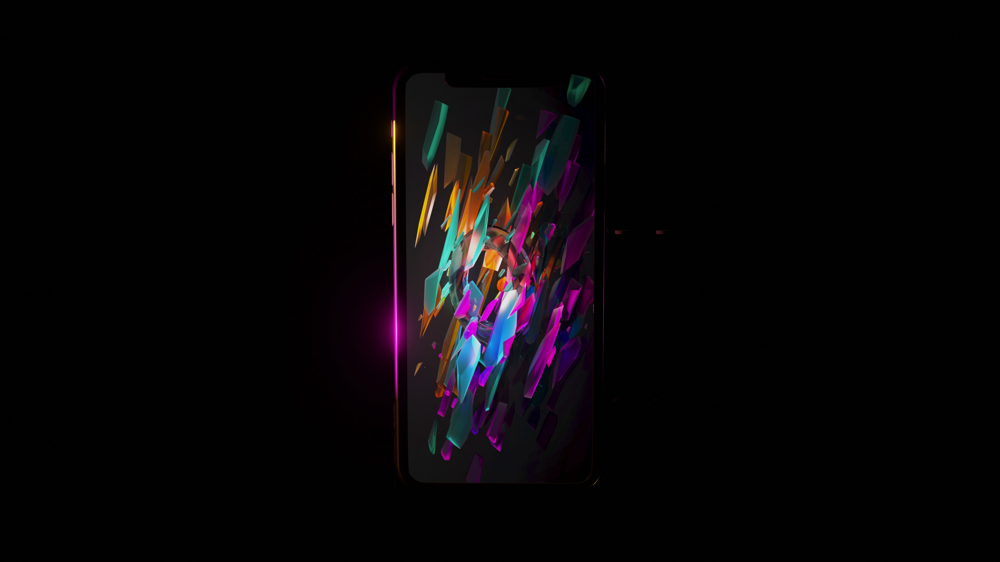
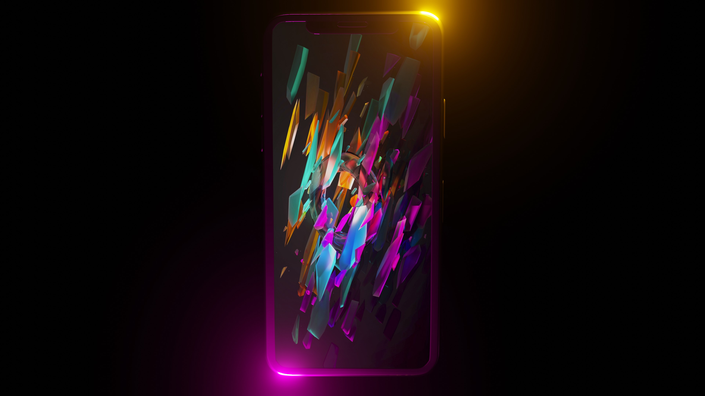

Phone Model - Advertising Style
Phone model with lighting in an advertising style, showcasing product presentation.
 Blender
Blender
 DaVinci Resolve
DaVinci Resolve

A hard-surface model of a smartphone created with clean topology and efficient UV mapping. The advertising-style lighting emphasizes the product's sleek design, making it suitable for marketing materials and presentations.

